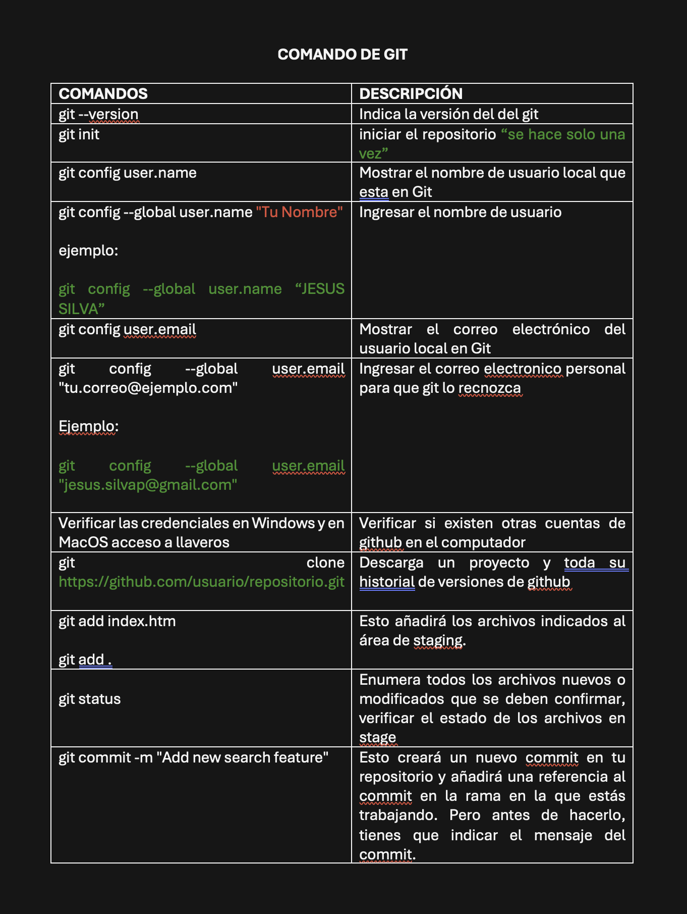
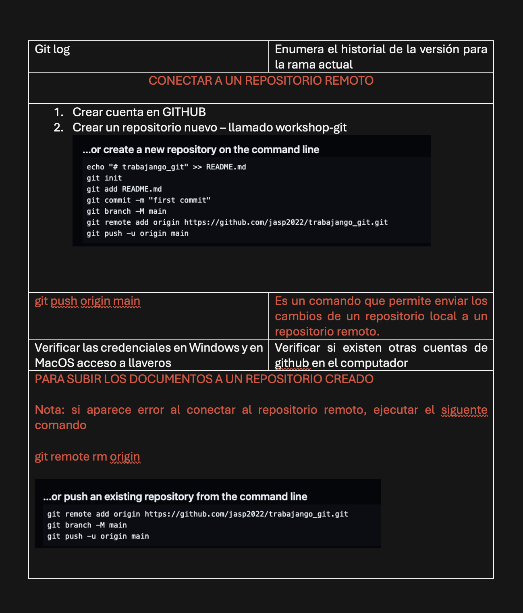

Workshop
Control de Versiones
El control de versiones es un sistema que registra y gestiona los cambios en archivos a lo largo del tiempo, facilitando la colaboración y el seguimiento de modificaciones. Se utiliza principalmente en desarrollo de software.

¿Qué es Git?
Git es un sistema distribuido de control de versiones, gratuito y de código abierto bajo licencia GPLv2. Fue diseñado originalmente por Linus Torvalds12, creador del kernel de Linux. El logo de Git representa la posibilidad de crear bifurcaciones de tu código Git fue concebido con la idea de ofrecer un gran rendimiento, ocupar menos espacio en disco y evitar la necesidad de un servidor central para que pudiera ser distribuido. De hecho, esto último es lo que hacía que fuese realmente novedoso respecto a otras alternativas del momento como Subversion, que tenían una solución más centralizada.

¿Qué es un repositorio?
Un repositorio es el almacenamiento de archivos y su historial de cambios.
Repositorio Local: Almacenado en la máquina del desarrollador.

Repositorio Remoto: Almacenado en un servidor remoto y accesible para otros colaboradores.

¿Qué es GitHub?
GitHub es una plataforma de alojamiento para proyectos Git, que facilita la colaboración y el control de versiones en proyectos de software.

¿Qué es una rama en Git y para qué sirve?
Una rama en Git es una versión paralela del repositorio que permite trabajar en diferentes características de manera aislada antes de fusionarlas con la rama principal.
Estados en Git
• modificado (modified): El archivo contiene cambios pero todavía no han sido
marcados para ser confirmados. Se encuentra en el directorio de trabajo.
• preparado (staged): Son los archivos que han sido modificados en el directorio
de trabajo y se han marcado como preparados para ser confirmados en el
repositorio local. Se encuentran en un área temporal transitoria. Esta acción
recibe el nombre de add.
• confirmado (committed): El archivo se encuentra grabado en el repositorio
local. Esta acción recibe el nombre de commit.

¿Qué es la terminal, consola o línea de comandos y para qué sirve?
Terminal
Definición: Interfaz que permite acceder a la línea de comandos para ejecutar instrucciones.
Propósito: Interactuar con el sistema operativo sin una interfaz gráfica; realizar tareas como gestión de archivos y ejecución de programas.
Ejemplos: Terminal en Linux y macOS; Command Prompt (CMD) y PowerShell en Windows.
Consola
Definición: Entorno donde se ejecutan los comandos. Puede referirse al dispositivo físico o al programa que emula dicho dispositivo.
Propósito: Facilita el acceso a una shell para introducir y ejecutar comandos. Parte de la terminal.
Ejemplos: Ventana de la terminal en sistemas modernos.
Línea de Comandos
Definición: Interfaz textual dentro de la terminal o consola para ingresar comandos.
Propósito: Ejecutar comandos específicos, automatizar tareas, y manipular archivos y procesos.
Ejemplos: Comandos como ls (listar archivos), cd (cambiar directorio), dir (listar archivos en Windows), y git commit (hacer commits en Git).
Usos Comunes
Gestión de Archivos: Copiar, mover, renombrar y eliminar archivos.
Configuración del Sistema: Ajustar configuraciones y gestionar procesos.
Automatización: Escribir scripts para tareas repetitivas.
Desarrollo: Compilar código y gestionar versiones con herramientas como Git.
Diagnóstico: Obtener información del sistema y solucionar problemas.
Comandos
ls: Lista los archivos y directorios en el directorio actual.
cd <directorio>:Cambia al directorio especificado.
cd .. : Retrocede un nivel en el sistema de archivos.
pwd : Muestra la ruta del directorio actual.
mkdir <nombre>: Crea un nuevo directorio con el nombre especificado.
touch <nombre>: Crea un nuevo archivo vacío con el nombre especificado.
rm <nombre>: Elimina el archivo especificado.
cp <nombre> <directorio>: Copia el archivo especificado al directorio indicado.
mv <nombre> <directorio>: Mueve el archivo especificado al directorio indicado.
Comandos en clase

